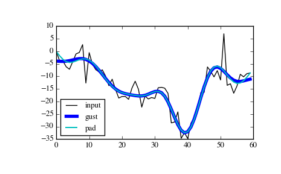

scipy.signal.filtfilt¶
- scipy.signal.filtfilt(b, a, x, axis=-1, padtype='odd', padlen=None, method='pad', irlen=None)[source]¶
A forward-backward filter.
This function applies a linear filter twice, once forward and once backwards. The combined filter has linear phase.
The function provides options for handling the edges of the signal.
When method is “pad”, the function pads the data along the given axis in one of three ways: odd, even or constant. The odd and even extensions have the corresponding symmetry about the end point of the data. The constant extension extends the data with the values at the end points. On both the forward and backward passes, the initial condition of the filter is found by using lfilter_zi and scaling it by the end point of the extended data.
When method is “gust”, Gustafsson’s method [R173] is used. Initial conditions are chosen for the forward and backward passes so that the forward-backward filter gives the same result as the backward-forward filter.
Parameters: b : (N,) array_like
The numerator coefficient vector of the filter.
a : (N,) array_like
The denominator coefficient vector of the filter. If a[0] is not 1, then both a and b are normalized by a[0].
x : array_like
The array of data to be filtered.
axis : int, optional
The axis of x to which the filter is applied. Default is -1.
padtype : str or None, optional
Must be ‘odd’, ‘even’, ‘constant’, or None. This determines the type of extension to use for the padded signal to which the filter is applied. If padtype is None, no padding is used. The default is ‘odd’.
padlen : int or None, optional
The number of elements by which to extend x at both ends of axis before applying the filter. This value must be less than x.shape[axis] - 1. padlen=0 implies no padding. The default value is 3 * max(len(a), len(b)).
method : str, optional
Determines the method for handling the edges of the signal, either “pad” or “gust”. When method is “pad”, the signal is padded; the type of padding is determined by padtype and padlen, and irlen is ignored. When method is “gust”, Gustafsson’s method is used, and padtype and padlen are ignored.
irlen : int or None, optional
When method is “gust”, irlen specifies the length of the impulse response of the filter. If irlen is None, no part of the impulse response is ignored. For a long signal, specifying irlen can significantly improve the performance of the filter.
Returns: y : ndarray
The filtered output, an array of type numpy.float64 with the same shape as x.
See also
Notes
The option to use Gustaffson’s method was added in scipy version 0.16.0.
References
[R173] (1, 2) F. Gustaffson, “Determining the initial states in forward-backward filtering”, Transactions on Signal Processing, Vol. 46, pp. 988-992, 1996. Examples
The examples will use several functions from scipy.signal.
>>> from scipy import signal >>> import matplotlib.pyplot as plt
First we create a one second signal that is the sum of two pure sine waves, with frequencies 5 Hz and 250 Hz, sampled at 2000 Hz.
>>> t = np.linspace(0, 1.0, 2001) >>> xlow = np.sin(2 * np.pi * 5 * t) >>> xhigh = np.sin(2 * np.pi * 250 * t) >>> x = xlow + xhigh
Now create a lowpass Butterworth filter with a cutoff of 0.125 times the Nyquist rate, or 125 Hz, and apply it to x with filtfilt. The result should be approximately xlow, with no phase shift.
>>> b, a = signal.butter(8, 0.125) >>> y = signal.filtfilt(b, a, x, padlen=150) >>> np.abs(y - xlow).max() 9.1086182074789912e-06
We get a fairly clean result for this artificial example because the odd extension is exact, and with the moderately long padding, the filter’s transients have dissipated by the time the actual data is reached. In general, transient effects at the edges are unavoidable.
The following example demonstrates the option method="gust".
First, create a filter.
>>> b, a = signal.ellip(4, 0.01, 120, 0.125) # Filter to be applied. >>> np.random.seed(123456)
sig is a random input signal to be filtered.
>>> n = 60 >>> sig = np.random.randn(n)**3 + 3*np.random.randn(n).cumsum()
Apply filtfilt to sig, once using the Gustafsson method, and once using padding, and plot the results for comparison.
>>> fgust = signal.filtfilt(b, a, sig, method="gust") >>> fpad = signal.filtfilt(b, a, sig, padlen=50) >>> plt.plot(sig, 'k-', label='input') >>> plt.plot(fgust, 'b-', linewidth=4, label='gust') >>> plt.plot(fpad, 'c-', linewidth=1.5, label='pad') >>> plt.legend(loc='best') >>> plt.show()
The irlen argument can be used to improve the performance of Gustafsson’s method.
Estimate the impulse response length of the filter.
>>> z, p, k = signal.tf2zpk(b, a) >>> eps = 1e-9 >>> r = np.max(np.abs(p)) >>> approx_impulse_len = int(np.ceil(np.log(eps) / np.log(r))) >>> approx_impulse_len 137
Apply the filter to a longer signal, with and without the irlen argument. The difference between y1 and y2 is small. For long signals, using irlen gives a significant performance improvement.
>>> x = np.random.randn(5000) >>> y1 = signal.filtfilt(b, a, x, method='gust') >>> y2 = signal.filtfilt(b, a, x, method='gust', irlen=approx_impulse_len) >>> print(np.max(np.abs(y1 - y2))) 1.80056858312e-10